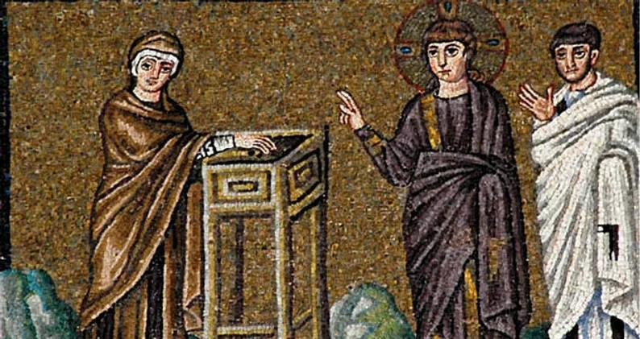

ЗАЧЕМ В ЦЕРКВИ ПЛАТИТЬ ДЕНЬГИ?
Каждый отдельный храм существует на средства, собранные общиной. Это деньги, передаваемые за богослужением, поступления в церковную лавку за требы и свечи, пожертвования прошедших таинства, спонсорская помощь некоторых братьев и продукты, которые приносятся в церковь членами общины. Священник НЕ ПОЛУЧАЕТ никакой зарплаты ни от государства, ни от епархии.
ЗАЧЕМ СВЯЩЕННИКУ ДЕНЬГИ?
Священник как глава общины христиан (Деян 15:6) несет ответственность за приход. Он должен обеспечить совершение таинств и богослужений, в частности, материально. Для исполнения богослужебных гимнов необходимо пригласить хор, для совершения Евхаристии — иметь вино и хлеб. Необходимы церковные книги, богослужебные предметы. Нужно оплачивать воду и электроэнергию. Но и это лишь малая часть материальных затрат. Если вы хотите как-то помочь приходу и узнать о текущих материальных проблемах, обращайтесь к настоятелю.
ЧТО ОБ ЭТОМ ГОВОРИТ ПИСАНИЕ?
Апостол Павел (1 Кор 9:7-14):
А какой наемник воюет на собственные деньги? Какой земледелец, посадив виноградник, не ест своего винограда? Какой пастух не пьет молока от собст-венного стада? Но это не только примеры из обыденной жизни, о том же говорит и Закон. Ведь в Законе Моисея написано: «Не надевай намордника молотящему волу». Разве о волах заботится Бог? Не для нас ли Он это говорит?
Это же для нас написано: «Пахарь пашет и молотильщик молотит в надежде на свою долю урожая». И если мы, посеяв среди вас семена Духа, будем рассчитывать и на материальную долю урожая, неужели мы требуем слишком многого? И раз другие пользуются правом на вашу помощь, то у нас не больше ли прав? И все же мы никогда не пользовались этим правом, наоборот, мы миримся со всем, чтобы ничем не помешать Благой Вести о Христе. Разве вам не известно, что служители Храма кормятся от Храма и те, кто при жертвеннике, имеют право на часть жертвенных приношений? Так и Господь повелел тем, кто возвещает Благую Весть, от нее получать средства к жизни.
ЗАЧЕМ НУЖНЫ ТРЕБЫ?
Община христиан благодарит каждого жертвователя, обеспечивающего существование прихода. Принимая жертву, мы свидетельствуем об этом перед Христом и просим о даровании Царства Бога всякому дающему благо и о прощении грехов, всякому простившему.
Я ХОЧУ ПОМОЧЬ НУЖДАЮЩИМСЯ!
Обратитесь к настоятелю за более подробной информацией о социальном служении прихода святого Феодора Ушакова. И помните: помогать можно не только деньгами, но и личным участием, начиная от уборки и заканчивая организацией кружков.
Проявите себя ради ближних, и Господь вернет вам сторицей!

Россия, г. Санкт-Петербург, пр. Королёва, д. 7


+7 (812) 941-40-52

ushakov_church@mail.ru